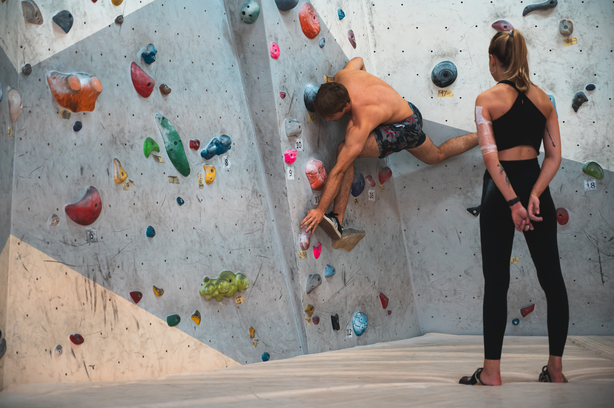

It’s beautiful September morning. Summer is slowly packing its bags leaving closet space for golden autumn shades… At last it is not that hot, you think, as your mind starts clearing the paths of ideas. “Hm… I want to start climbing. Yes. Man, imagine me up this cliff above the seashore, or somewhere in the mountains, on a great day like this one, going up, cherishing the view, one with the nature… Just great. What a joy! Yeah… There’s this newly opened gym in Bigz, it looks really good, it does. I should go.
But… Yeah… Maybe… Maybe, after all, I…”
NO! Don’t say it.
Yes, you can.
Climbing is a full-body-and-mind activity that is inherent to everyone; the movement of climbing is among basic human movements. Look at the children! Back when that was us, we climbed like Olympic professionals onto everything within the candy or challenge reach. Now that we are older longer-limbed adults, climbing seems unnecessary as we can just raise our arms most of the time, set our feet or do a little jump, and just take what we need (a candy). So… Why wouldn’t we do the same on a surface more challenging than ground? Why wouldn’t we hop back in to child-like selves and enjoy this new playground? Why wouldn’t we enhance our physical and mental state, experience nature on a completely different level, opt for a joyful and rewarding lifestyle?
Because reasons.
- “I want to start climbing, but I don’t have any equipment.”
You should start climbing. At first, you won’t need anything except comfortable clothes (sure, that high school shorts and torn t-shirt are perfect) and old pair of shoes that you’re not sorry to devastate. Converse All Star (“starke”) or similar flea-market copy is a popular choice among newcomers and for a good reason – strong rubber sole will keep you on the rock better than Air Max variants. Also, for a price of Pinokio pancakes, you can rent climbing shoes in our gym – the choice is getting fancier every day.
You will need chalk, too, the holy powder of friction, to keep your sweaty palms dry and, consequently – you on the rock. No worries, we have it in the gym already and we’ll be happy to lend you some for your first ascents.
When you get hooked, your very own climbing shoes should be the first thing on your shopping list. More on that here (link za Jelenin tekst o penjačicama ispod “here”).
For your first outdoor rock trip, you will need plentiful of items you don’t have: climbing rope, 15 quickdraws, harness, belay device, chalk, climbing shoes, and victorious attitude. We have it all, attitude included. Yours is only to contribute to it by giving your best and passing it on.
- “I want to start climbing, but it seems really hard.”
You should start climbing – and yes, it is hard. Nevertheless, we have experienced and helpful coaches who will be there during your first climbing steps and make them easier. Working with coaches is highly recommended for beginners – you want to avoid both injuries and adopting incorrect technique (strenuous to fix afterwards). Soon enough, you’ll be more skilled and agile on the rock asking yourself what took you so long to start in the first place.
- “I want to start climbing, but I’m afraid of the heights.”
Well, you should start climbing because you’ll be in a great company – a lot of climbers are afraid of the heights, or at least they used to be. Fear is a temporary illusion; it goes away when we (gradually) expose ourselves to it. Furthermore, there’s no amount of fear that today’s climbing equipment with its safety standards cannot endure.
Secret sharing time: climbers usually don’t look down, they’re too busy looking around themselves in a search of the next best foot/hand hold. 😊
- “I want to start climbing, but I am way too old.”
You should start climbing because you are not old – you are mature. As such, you know your body, your excuses, and your limits, so it is time to outsmart all of them. Being mature, you are probably organised and you won’t waste precious time on chit-chat and gossiping when there’s training to be done. You are experienced in adaptation, so you will never get angry with the rock when you can’t climb something – you will just change your strategy which will lead to success. On top of all that, you are younger than you will ever be again.
- “I want to start climbing, but I don’t know anyone there.”
You should start climbing - you will get to know us easily. Climbers are a vivid bunch of introverts and extroverts with different lives and interests outside the rocks, but we are all polite, helpful, and happy to meet you. Honestly.
- “I want to start climbing, but I am too heavy.”
You should start climbing. You will learn how to move efficiently in regards to your weight and body composition. No sugar-coating here - being a struggle with gravity, climbing is easier if you’re on a somewhat lighter side of the spectrum, HOWEVER, there are numerous examples of bulkier folks’ bodies getting adjusted to the nature of the sport without climbers even noticing it happen (euphemism for: “they lost excess weight”). Come climb and your body will react enthusiastically. Good stuff: if you’re heavier, prior to becoming lean and strong, you will more naturally adopt proper climbing technique needed to complete your routes. This is an excellent pay-off because that good technique stays with you later on - forever.
- “I want to start climbing, but I am too weak.”
You should DEFINITELY start climbing. Weak beginners are rock-star beginners – they are resourceful, they use their whole bodies to stay balanced, their movement patterns vary, their impeccable footwork compensates for the lack of upper-body physique. Strength does matter (injury prevention, confidence, additional movement variety) and in time, you will get stronger surprising yourself with all those impossible moves becoming a warm-up route. Start climbing soon. Power to the weak!
- “I want to start climbing, but I am too skinny.”
Ok, what? Get on the wall.
- “I want to start climbing, but I am way too strong for that.”
Nobody’s pushing.
- “I’m an extrovert, I enjoy team sports and climbing seems like a lonely endeavour.”
Alone on the wall you are indeed. Nevertheless, climbers are exuberant in showing their support during crucial times on a climb and sometimes you will feel like an entire stadium is cheering for you to finish that route. Plus, pre-climb and post-climb talks will make your extroverted heart pumping like a blast.
- “I’m an introvert, I don’t like to be looked at and cheered for while climbing.”
You are alone on that wall. Do your thing and don’t worry about the eyes and shouts. Also, pre-climb and post-climb talks with a chosen few will get your introverted heart pumping blissfully.
You should start climbing. There won’t be a candy waiting for you on the top anymore. Still, time well spent, realisation of elusiveness of your limits, and kind people you’ll meet on the way should be enough to make up for it.
😊
…